← Zuruck →
ICELAND
Laugavegurinn
[34 mile route. Roughly 2-4 days in length, some resupply huts along the way]
Looks like it goes through a lot of volcanic locations along the way. Many many waterfalls, super green! Iceland is definitely a geologically young island so, I expect the only vegetation you'd be finding there would be young and close-cropped.. still, the trail is relatively unpopulated, so, it seems like it'd be a mix of green and black and blue and... ahhhhh!
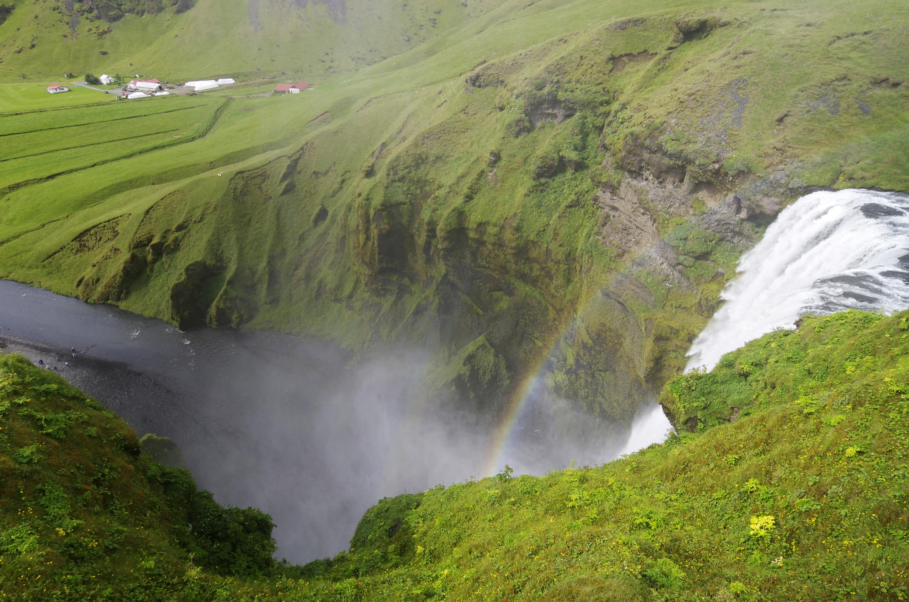 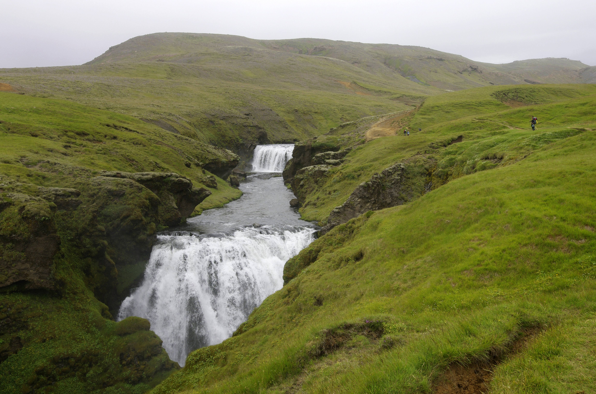

 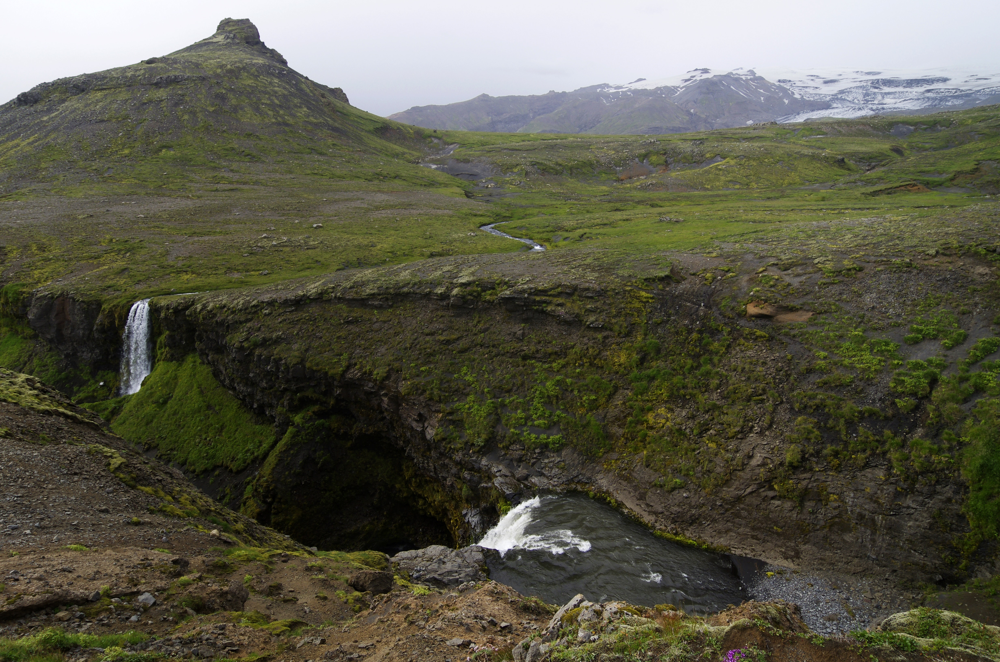
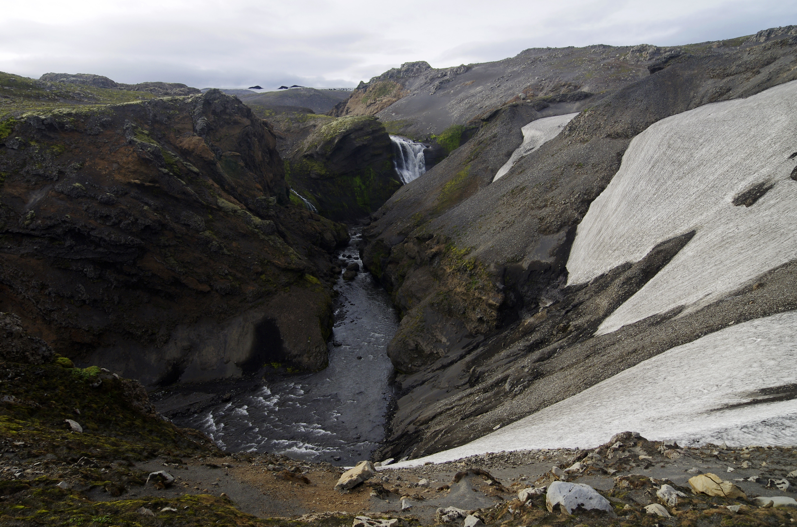
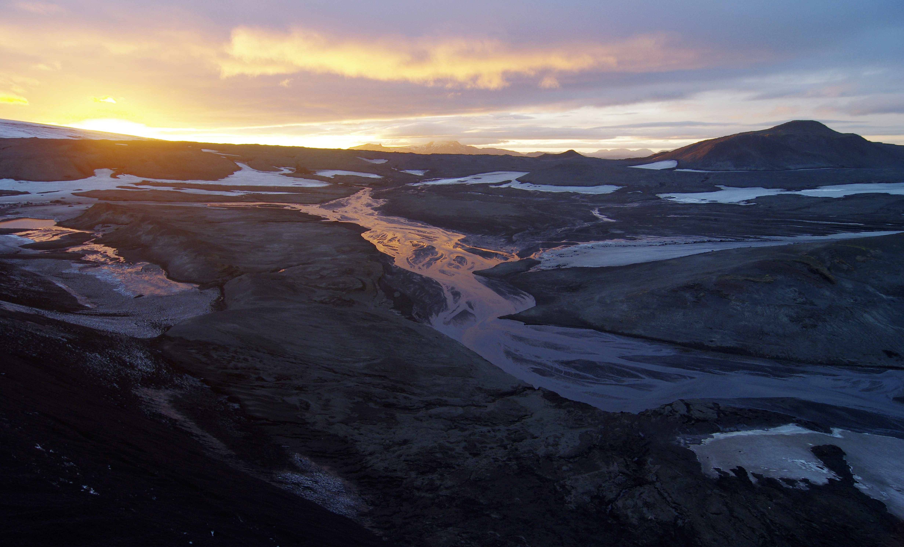
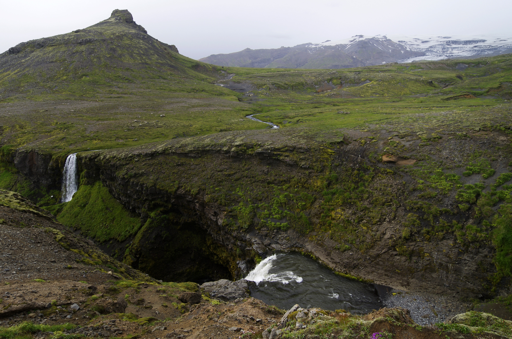
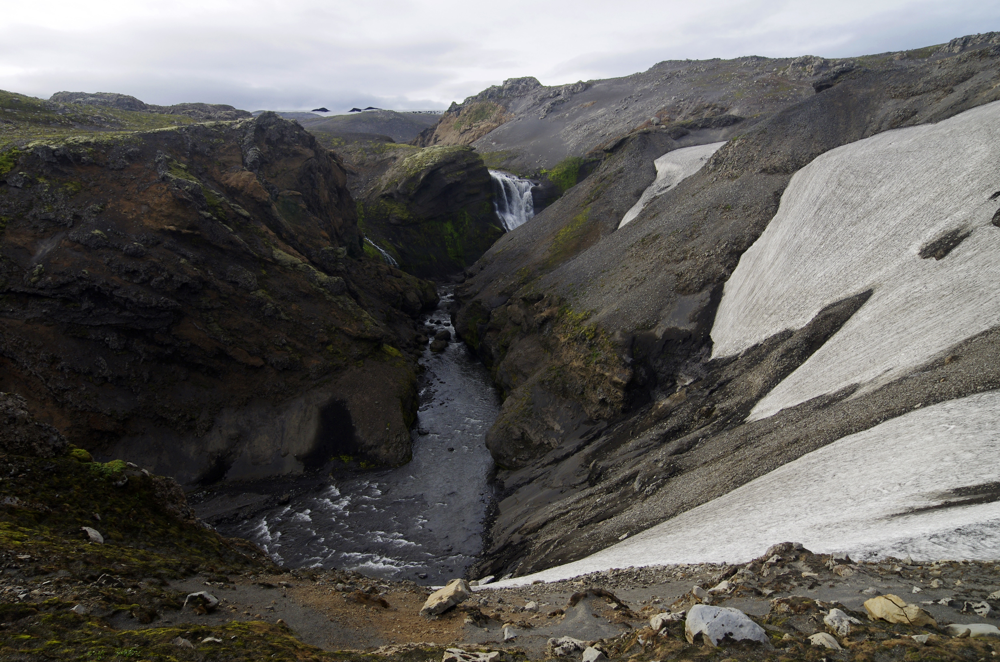
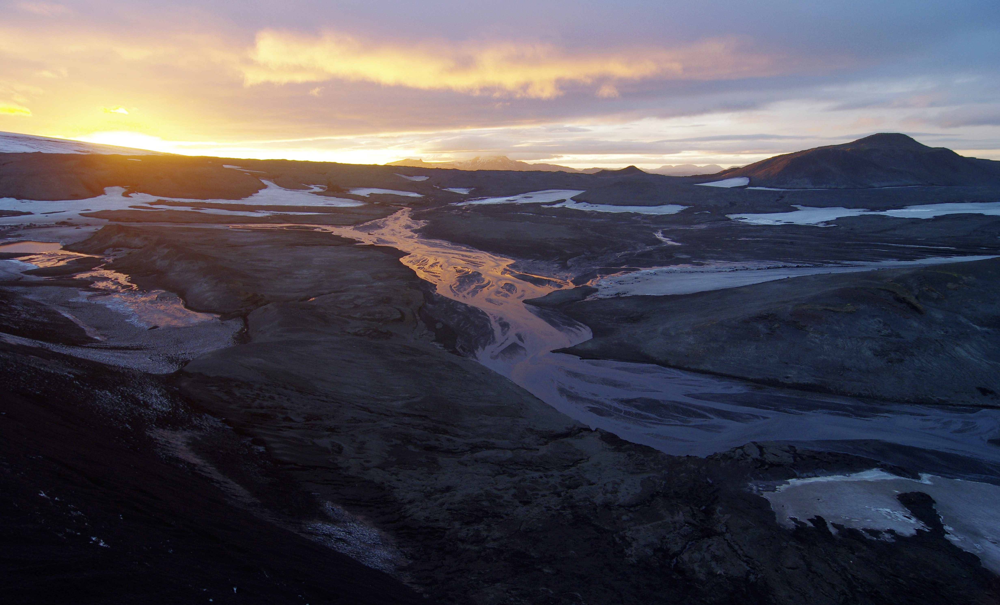
Hornstrandir
[Variable route (undefined path/freestyle)... variable length as well, likely less than a month]
This is a route on the northernmost Icelandic peninsula, Hornstrandir.. it is utterly hiker-defined, however the nature of Icelandic terrain allows for a huge range of options as far as this! It's dangerous for sure, as there is no infrastracture in place to defend against potential injuries, which, means... well, I give you a hopeful smile that I can join you on it :)
It is a place to enjoy solitude and silence – a place where you actually notice the sound of a bird’s wings, the wind, the trickle of a stream or the hum of a very distant boat engine. Other than Iceland’s desert interior, Hornstrandir is the best place to feel completely alone on the Earth.
https://www.northernadventures.co/return-to-hornstrandir
 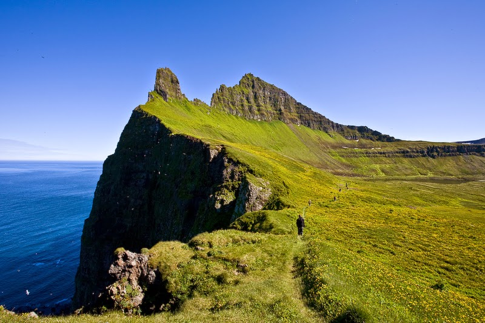
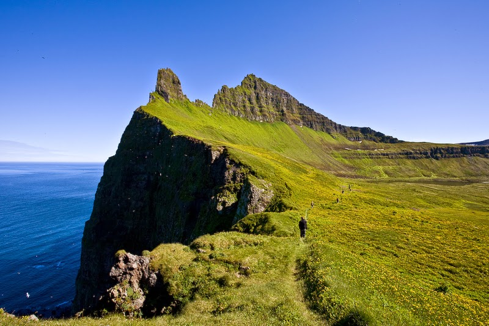


 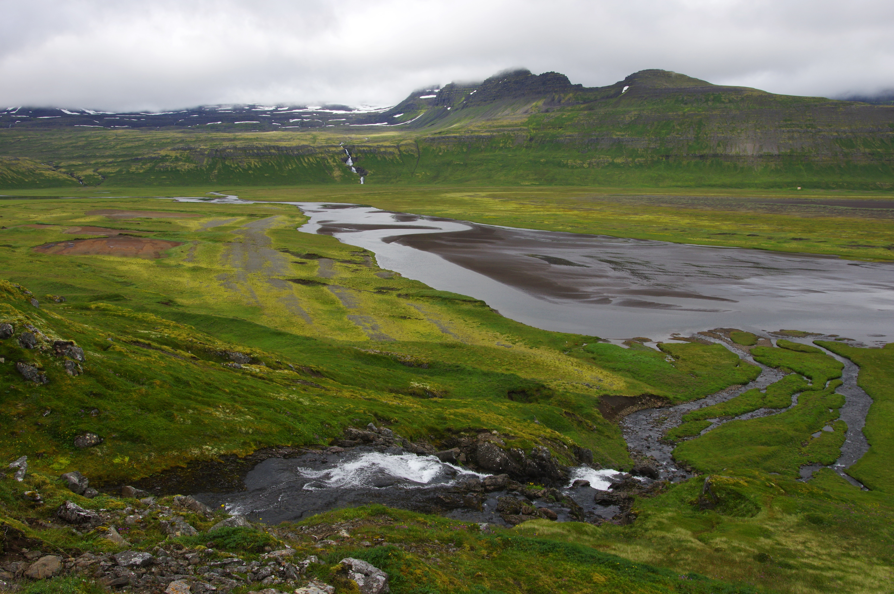
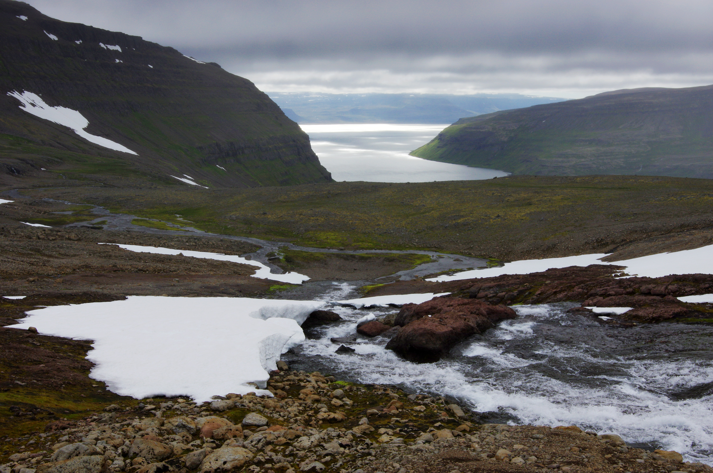
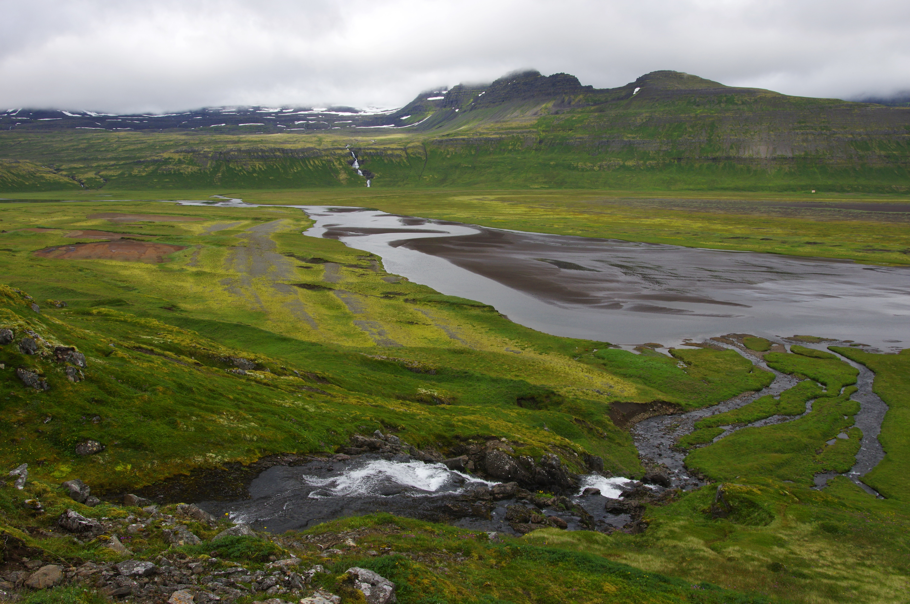
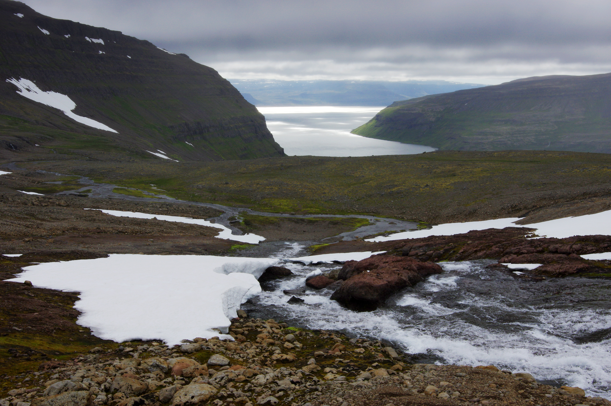